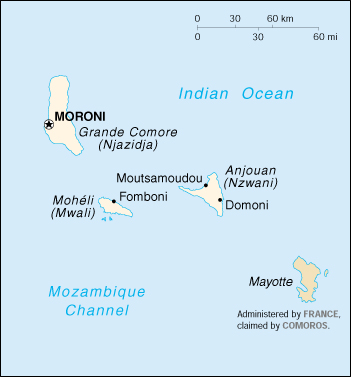

{kind=link}


| Comoros |
|
|  | |
| Introduction |
Background: Unstable Comoros has endured 19 coups or attempted coups since gaining independence from France in 1975. In 1997, the islands of Anjouan and Moheli declared their independence from Comoros. A subsequent attempt by the government to reestablish control over the rebellious islands by force failed, and presently the Organization of African Unity is brokering negotiations to effect a reconciliation.
| Geography |
Location: Southern Africa, group of islands in the Mozambique Channel, about two-thirds of the way between northern Madagascar and northern Mozambique
Geographic coordinates: 12 10 S, 44 15 E
Map references: Africa
Area:
total:
2,170 sq km
land:
2,170 sq km
water:
0 sq km
Area - comparative: slightly more than 12 times the size of Washington, DC
Land boundaries: 0 km
Coastline: 340 km
Maritime claims:
exclusive economic zone:
200 nm
territorial sea:
12 nm
Climate: tropical marine; rainy season (November to May)
Terrain: volcanic islands, interiors vary from steep mountains to low hills
Elevation extremes:
lowest point:
Indian Ocean 0 m
highest point:
Le Kartala 2,360 m
Natural resources: NEGL
Land use:
arable land:
35%
permanent crops:
10%
permanent pastures:
7%
forests and woodland:
18%
other:
30% (1993 est.)
Irrigated land: NA sq km
Natural hazards: cyclones possible during rainy season (December to April); Le Kartala on Grand Comore is an active volcano
Environment - current issues: soil degradation and erosion results from crop cultivation on slopes without proper terracing; deforestation
Environment - international agreements:
party to:
Biodiversity, Climate Change, Desertification, Endangered Species, Hazardous Wastes, Law of the Sea, Ozone Layer Protection, Wetlands
signed, but not ratified:
none of the selected agreements
Geography - note: important location at northern end of Mozambique Channel
| People |
Population: 578,400 (July 2000 est.)
Age structure:
0-14 years:
43% (male 123,891; female 123,241)
15-64 years:
54% (male 155,062; female 159,287)
65 years and over:
3% (male 8,072; female 8,847) (2000 est.)
Population growth rate: 3.05% (2000 est.)
Birth rate: 40.05 births/1,000 population (2000 est.)
Death rate: 9.59 deaths/1,000 population (2000 est.)
Net migration rate: 0 migrant(s)/1,000 population (2000 est.)
Sex ratio:
at birth:
1.03 male(s)/female
under 15 years:
1.01 male(s)/female
15-64 years:
0.97 male(s)/female
65 years and over:
0.91 male(s)/female
total population:
0.99 male(s)/female (2000 est.)
Infant mortality rate: 86.33 deaths/1,000 live births (2000 est.)
Life expectancy at birth:
total population:
60.03 years
male:
57.85 years
female:
62.28 years (2000 est.)
Total fertility rate: 5.38 children born/woman (2000 est.)
Nationality:
noun:
Comoran(s)
adjective:
Comoran
Ethnic groups: Antalote, Cafre, Makoa, Oimatsaha, Sakalava
Religions: Sunni Muslim 98%, Roman Catholic 2%
Languages: Arabic (official), French (official), Comoran (a blend of Swahili and Arabic)
Literacy:
definition:
age 15 and over can read and write
total population:
57.3%
male:
64.2%
female:
50.4% (1995 est.)
| Government |
Country name:
conventional long form:
Federal Islamic Republic of the Comoros
conventional short form:
Comoros
local long form:
Republique Federale Islamique des Comores
local short form:
Comores
Data code: CN
Government type: independent republic
Capital: Moroni
Administrative divisions:
three islands; Grande Comore (Njazidja), Anjouan (Nzwani), and Moheli (Mwali)
note:
there are also four municipalities named Domoni, Fomboni, Moroni, and Moutsamoudou
Independence: 6 July 1975 (from France)
National holiday: Independence Day, 6 July (1975)
Constitution: 20 October 1996
Legal system: French and Muslim law in a new consolidated code
Suffrage: 18 years of age; universal
Executive branch:
chief of state:
President AZALI Assoumani (since 6 May 1999); note - the interim government of President Tajiddine Ben Said MASSOUNDE, which had assumed power on 6 November 1998 upon the death of President Mohamed TAKI Abdulkarim, was overthrown in a bloodless coup on 30 April 1999
head of government:
Prime Minister Bianrifi TARMIDI (since 2 December 1999)
cabinet:
Council of Ministers appointed by the president
elections:
president elected by popular vote for a five-year term; election last held 6 and 16 March 1996 (next to be held NA); prime minister appointed by the president
note:
President AZALI claimed a one-year term at the time of the coup; elections, in theory, should be held in the spring of 2000 but are likely to be dependent on the island of Anjouan remaining part of the federation
election results:
results of the last presidential election before the coup were: Mohamed TAKI Abdulkarim elected president; percent of vote - 64.3%
Legislative branch:
bicameral legislature consists of the Senate (15 seats: five from each island); members selected by regional councils for six-year terms) and a Federal Assembly or Assemblee Federale (43 seats; members elected by popular vote to serve five-year terms); note - the Federal Assembly was dissolved following the coup of 30 April 1999
elections:
Federal Assembly - last held 1 and 8 December 1996 (next to be held NA)
election results:
Federal Assembly - percent of vote by party - NA; seats by party - RND 39, FNJ 3, independent 1
note:
the constitution stipulates that only parties that win six seats in the Federal Assembly (two from each island) are permitted to be in opposition, but if no party accomplishes that, the second most successful party will be in opposition; in the elections of December 1996 the FNJ appeared to qualify as opposition
Judicial branch: Supreme Court or Cour Supremes, two members appointed by the president, two members elected by the Federal Assembly, one by the Council of each island, and former presidents of the republic
Political parties and leaders: Front National pour la Justice or FNJ (Islamic party in opposition) [Ahmed Abdallah MOHAMED, Ahmed ABOUBACAR, Soidiki M'BAPANOZA]; Rassemblement National pour le Development or RND (party of the government) [Ali Bazi SELIM]
International organization participation: ACCT, ACP, AfDB, AFESD, AL, CCC, ECA, FAO, FZ, G-77, IBRD, ICAO, IDA, IDB, IFAD, IFC, IFRCS (associate), ILO, IMF, InOC, Intelsat, IOC, ITU, NAM, OAU, OIC, OPCW, UN, UNCTAD, UNESCO, UNIDO, UPU, WHO, WMO, WTrO (applicant)
Diplomatic representation in the US:
chief of mission:
Ambassador-designate Ahmed DJABIR (ambassador to the US and Canada and permanent representative to the UN)
chancery:
(temporary) care of the Permanent Mission of the Federal and Islamic Republic of the Comoros to the United Nations, 420 East 50th Street, New York, NY 10022
telephone:
[1] (212) 983-4712
Diplomatic representation from the US: the US does not have an embassy in Comoros; the ambassador to Mauritius is accredited to Comoros
Flag description: green with a white crescent in the center of the field, its points facing downward; there are four white five-pointed stars placed in a line between the points of the crescent; the crescent, stars, and color green are traditional symbols of Islam; the four stars represent the four main islands of the archipelago - Mwali, Njazidja, Nzwani, and Mayotte (a territorial collectivity of France, but claimed by Comoros); the design, the most recent of several, is described in the constitution approved by referendum on 7 June 1992
| Economy |
Economy - overview: One of the world's poorest countries, Comoros is made up of three islands that have inadequate transportation links, a young and rapidly increasing population, and few natural resources. The low educational level of the labor force contributes to a subsistence level of economic activity, high unemployment, and a heavy dependence on foreign grants and technical assistance. Agriculture, including fishing, hunting, and forestry, is the leading sector of the economy. It contributes 40% to GDP, employs 80% of the labor force, and provides most of the exports. The country is not self-sufficient in food production; rice, the main staple, accounts for the bulk of imports. The government is struggling to upgrade education and technical training, to privatize commercial and industrial enterprises, to improve health services, to diversify exports, to promote tourism, and to reduce the high population growth rate. Continued foreign support is essential if the goal of 4% annual GDP growth is to be met.
GDP: purchasing power parity - $410 million (1998 est.)
GDP - real growth rate: 0% (1998 est.)
GDP - per capita: purchasing power parity - $725 (1998 est.)
GDP - composition by sector:
agriculture:
40%
industry:
5%
services:
55% (1997 est.)
Population below poverty line: NA%
Household income or consumption by percentage share:
lowest 10%:
NA%
highest 10%:
NA%
Inflation rate (consumer prices): 4% (1998)
Labor force: 144,500 (1996 est.)
Labor force - by occupation: agriculture 80%, government 3%
Unemployment rate: 20% (1996 est.)
Budget:
revenues:
$48 million
expenditures:
$53 million, including capital expenditures of $NA (1997)
Industries: tourism, perfume distillation, textiles, furniture, jewelry, construction materials, soft drinks
Industrial production growth rate: NA%
Electricity - production: 15 million kWh (1998)
Electricity - production by source:
fossil fuel:
86.67%
hydro:
13.33%
nuclear:
0%
other:
0% (1998)
Electricity - consumption: 14 million kWh (1998)
Electricity - exports: 0 kWh (1998)
Electricity - imports: 0 kWh (1998)
Agriculture - products: vanilla, cloves, perfume essences, copra, coconuts, bananas, cassava (tapioca)
Exports: $9.3 million (f.o.b., 1998 est.)
Exports - commodities: vanilla, ylang-ylang, cloves, perfume oil, copra
Exports - partners: France 43%, US 43%, Germany 7% (1997)
Imports: $49.5 million (f.o.b., 1998 est.)
Imports - commodities: rice and other foodstuffs, consumer goods; petroleum products, cement, transport equipment
Imports - partners: France 59%, South Africa 15%, Kenya 6% (1997)
Debt - external: $197 million (1997 est.)
Economic aid - recipient: $28.1 million (1997)
Currency: 1 Comoran franc (CF) = 100 centimes
Exchange rates:
Comoran francs (CF) per US$1 - 485.44 (January 2000), 461.77 (1999), 442.46 (1998), 437.75 (1997), 383.66 (1996), 374.36 (1995)
note:
prior to January 1999, the official rate was pegged to the French franc at 75 CFs per French franc; since 1 January 1999, the CF is pegged to the euro at a rate of 491.9677 Comoran francs per euro
Fiscal year: calendar year
| Communications |
Telephones - main lines in use: 5,000 (1995)
Telephones - mobile cellular: 0 (1995)
Telephone system:
sparse system of microwave radio relay and HF radiotelephone communication stations
domestic:
HF radiotelephone communications and microwave radio relay
international:
HF radiotelephone communications to Madagascar and Reunion
Radio broadcast stations: AM 1, FM 2, shortwave 1 (1998)
Radios: 90,000 (1997)
Television broadcast stations: 0 (1998)
Televisions: 1,000 (1997)
Internet Service Providers (ISPs): 1 (1999)
| Transportation |
Railways: 0 km
Highways:
total:
880 km
paved:
673 km
unpaved:
207 km (1996 est.)
Ports and harbors: Fomboni, Moroni, Moutsamoudou
Merchant marine: none (1999 est.)
Airports: 4 (1999 est.)
Airports - with paved runways:
total:
4
2,438 to 3,047 m:
1
914 to 1,523 m:
3 (1999 est.)
| Military |
Military branches: Comoran Security Force
Military manpower - availability:
males age 15-49:
136,914 (2000 est.)
Military manpower - fit for military service:
males age 15-49:
81,477 (2000 est.)
Military expenditures - dollar figure: $NA
Military expenditures - percent of GDP: NA%
| Transnational Issues |
Disputes - international: claims French-administered Mayotte; the islands of Anjouan (Nzwani) and Moheli (Mwali) have moved to secede from Comoros